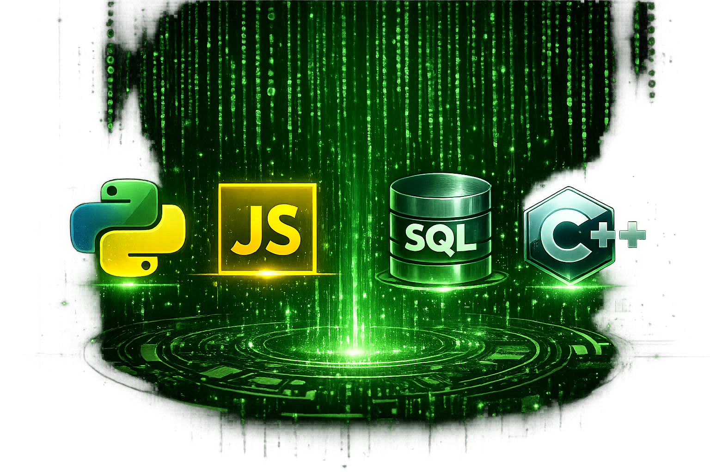

Comparison of Programming Languages

| Language | Difficulty | Speed | Common Uses | Beginner Friendly |
|---|---|---|---|---|
| Python | Easy | Moderate | AI, automation, data science, web development | Very high |
| JavaScript | Easy to Medium | Fast | Websites, web apps, server-side development | High |
| SQL | Easy to Medium | Fast for database queries | Databases, reports, data management | High |
| C++ | Difficult | Very fast | Games, operating systems, embedded systems | Low to Medium |
Sources
- Python Official Website
- MDN Web Docs
- W3Schools SQL Tutorial
- ISO C++
- Programming language logo images created with OpenAI ChatGPT.
- California State University, Monterey Bay